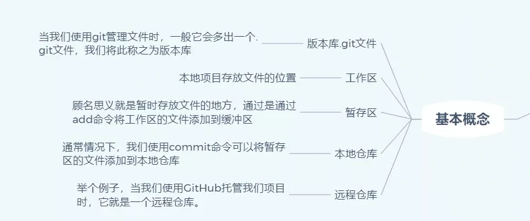
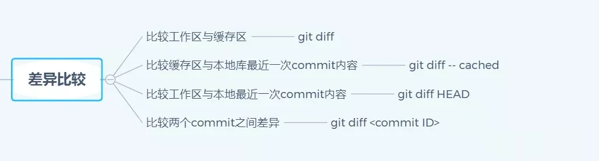

<!DOCTYPE html>


<html lang="zh-CN">


<head>
  <meta charset="utf-8" />
    
  <meta name="description" content="The seeker of the world" />
  
  <meta name="viewport" content="width=device-width, initial-scale=1, maximum-scale=1" />
  <title>
    全面掌握Git命令 |  Tianye Blog
  </title>
  <meta name="generator" content="hexo-theme-ayer">
  
  <link rel="shortcut icon" href="/favicon.ico" />
  
  
<link rel="stylesheet" href="/dist/main.css">

  
<link rel="stylesheet" href="/comm/remixicon.min.css">

  
<link rel="stylesheet" href="/css/custom.css">

  
  
<script src="/comm/pace.min.js"></script>

  
  

  
<script>
var _hmt = _hmt || [];
(function() {
	var hm = document.createElement("script");
	hm.src = "https://hm.baidu.com/hm.js?a65f4359920e6c4b5b2b6d0519751045";
	var s = document.getElementsByTagName("script")[0]; 
	s.parentNode.insertBefore(hm, s);
})();
</script>


<link rel="alternate" href="/atom.xml" title="Tianye Blog" type="application/atom+xml">
</head>

</html>

<body>
  <div id="app">
    
      
      <canvas width="1777" height="841"
        style="position: fixed; left: 0px; top: 0px; z-index: 99999; pointer-events: none;"></canvas>
      
    <main class="content on">
      <section class="outer">
  <article
  id="post-全面掌握Git命令"
  class="article article-type-post"
  itemscope
  itemprop="blogPost"
  data-scroll-reveal
>
  <div class="article-inner">
    
    <header class="article-header">
       
<h1 class="article-title sea-center" style="border-left:0" itemprop="name">
  全面掌握Git命令
</h1>
 

    </header>
     
    <div class="article-meta">
      <a href="/2019/10/%E5%85%A8%E9%9D%A2%E6%8E%8C%E6%8F%A1Git%E5%91%BD%E4%BB%A4/" class="article-date">
  <time datetime="2019-10-14T02:08:00.000Z" itemprop="datePublished">2019-10-14</time>
</a> 
  <div class="article-category">
    <a class="article-category-link" href="/categories/Git/">Git</a>
  </div>
  
<div class="word_count">
    <span class="post-time">
        <span class="post-meta-item-icon">
            <i class="ri-quill-pen-line"></i>
            <span class="post-meta-item-text"> 字数统计:</span>
            <span class="post-count">2k</span>
        </span>
    </span>

    <span class="post-time">
        &nbsp; | &nbsp;
        <span class="post-meta-item-icon">
            <i class="ri-book-open-line"></i>
            <span class="post-meta-item-text"> 阅读时长≈</span>
            <span class="post-count">8 分钟</span>
        </span>
    </span>
</div>
 
    </div>
      
    <div class="tocbot"></div>


  
    <div class="article-entry" itemprop="articleBody">
       
  <h2 id="相关图片介绍"><a href="#相关图片介绍" class="headerlink" title="相关图片介绍"></a>相关图片介绍</h2><h3 id="Git-脑洞图"><a href="#Git-脑洞图" class="headerlink" title="Git 脑洞图"></a>Git 脑洞图</h3><p></p>
<h3 id="首先我们的了解Git通常的操作流程，网上流行的不错一张图"><a href="#首先我们的了解Git通常的操作流程，网上流行的不错一张图" class="headerlink" title="首先我们的了解Git通常的操作流程，网上流行的不错一张图"></a>首先我们的了解Git通常的操作流程，网上流行的不错一张图</h3><p></p>
<center>Git经典流程图</center>


<h2 id="基本概念"><a href="#基本概念" class="headerlink" title="基本概念"></a>基本概念</h2><p></p>
<h3 id="基于上面的图，我们就有接下来一些概念"><a href="#基于上面的图，我们就有接下来一些概念" class="headerlink" title="基于上面的图，我们就有接下来一些概念"></a>基于上面的图，我们就有接下来一些概念</h3><ul>
<li>版本库.git<ul>
<li>当我们使用git管理文件时，比如git init时，这个时候，会多一个.git文件，我们把这个文件称之为版本库。</li>
<li>.git文件另外一个作用就是它在创建的时候，会自动创建master分支，并且将HEAD指针指向master分支。</li>
</ul>
</li>
<li>工作区<ul>
<li>本地项目存放文件的位置</li>
<li>可以理解成图上的workspace</li>
</ul>
</li>
<li>暂存区 (Index/Stage)<ul>
<li>顾名思义就是暂时存放文件的地方，通过是通过add命令将工作区的文件添加到缓冲区</li>
</ul>
</li>
<li>本地仓库（Repository）<ul>
<li>通常情况下，我们使用commit命令可以将暂存区的文件添加到本地仓库</li>
<li>通常而言，HEAD指针指向的就是master分支</li>
</ul>
</li>
<li>远程仓库（Remote）<ul>
<li>举个例子，当我们使用GitHub托管我们项目时，它就是一个远程仓库。</li>
<li>通常我们使用clone命令将远程仓库代码拷贝下来，本地代码更新后，通过push托送给远程仓库。</li>
</ul>
</li>
</ul>
<h3 id="Git文件状态"><a href="#Git文件状态" class="headerlink" title="Git文件状态"></a>Git文件状态</h3><ul>
<li>通常我们需要查看一个文件的状态<blockquote>
<p>git status</p>
</blockquote>
</li>
<li>Changes not staged for commit<ul>
<li>表示大概就是工作区有该内容，但是缓存区没有，需要我们git add</li>
</ul>
</li>
<li>Changes to be committed<ul>
<li>一般而言，这个时候，文件放在缓存区了，我们需要git commit</li>
</ul>
</li>
<li>nothing to commit, working tree clean<ul>
<li>这个时候，我们将本地的代码推送到远端即可</li>
</ul>
</li>
</ul>
<h2 id="常见命令"><a href="#常见命令" class="headerlink" title="常见命令"></a>常见命令</h2><p></p>
<center>Git常见命令</center>

<ul>
<li>列出当前配置<ul>
<li>git config –list </li>
</ul>
</li>
<li>列出Repository配置<ul>
<li>git config –local –list</li>
</ul>
</li>
<li>列出全局配置<ul>
<li>git config –global –list</li>
</ul>
</li>
<li>列出系统配置<ul>
<li>git config –system –list</li>
</ul>
</li>
</ul>
<p>通过上述的命令，发现你并没有配置用户信息的话，接下来配置一下</p>
<ul>
<li>配置用户名<ul>
<li>git config –global user.name “your name”</li>
</ul>
</li>
<li>配置用户邮箱<ul>
<li>git config –global user.email “<a href="mailto:youremail@github.com">youremail@github.com</a>“</li>
</ul>
</li>
</ul>
<h2 id="分支管理"><a href="#分支管理" class="headerlink" title="分支管理"></a>分支管理</h2><p></p>
<center>Git分支管理</center>

<ul>
<li>查看本地分支<ul>
<li>git branch</li>
</ul>
</li>
<li>查看远程分支<ul>
<li>git branch -r</li>
</ul>
</li>
<li>查看本地和远程分支<ul>
<li>git branch -a</li>
</ul>
</li>
<li>从当前分支，切换到其他分支<ul>
<li>git checkout <code>&lt;branch-name&gt;</code><figure class="highlight sh"><table><tr><td class="gutter"><pre><span class="line">1</span><br><span class="line">2</span><br></pre></td><td class="code"><pre><span class="line">// 举个例子</span><br><span class="line">git checkout feature/xxx</span><br></pre></td></tr></table></figure></li>
</ul>
</li>
<li>创建并切换到新建分支<ul>
<li>git checkout -b <code>&lt;branch-name&gt;</code><figure class="highlight sh"><table><tr><td class="gutter"><pre><span class="line">1</span><br><span class="line">2</span><br></pre></td><td class="code"><pre><span class="line">// 举个例子</span><br><span class="line">git checkout -b feature/xxx</span><br></pre></td></tr></table></figure></li>
</ul>
</li>
<li>删除分支<ul>
<li>git branch -d <code>&lt;branch-name&gt;</code><figure class="highlight sh"><table><tr><td class="gutter"><pre><span class="line">1</span><br><span class="line">2</span><br></pre></td><td class="code"><pre><span class="line">// 举个例子</span><br><span class="line">git branch -d feature/xxx</span><br></pre></td></tr></table></figure></li>
</ul>
</li>
<li>当前分支与指定分支合并<ul>
<li>git merge <code>&lt;branch-name&gt;</code><figure class="highlight sh"><table><tr><td class="gutter"><pre><span class="line">1</span><br><span class="line">2</span><br></pre></td><td class="code"><pre><span class="line">// 举个例子</span><br><span class="line">git merge feature/xxx</span><br></pre></td></tr></table></figure></li>
</ul>
</li>
<li>查看哪些分支已经合并到当前分支<ul>
<li>git branch –merged</li>
</ul>
</li>
<li>查看哪些分支没有合并到当前分支<ul>
<li>git branch –no-merged</li>
</ul>
</li>
<li>查看各个分支最后一个提交对象的信息<ul>
<li>git branch -v</li>
</ul>
</li>
<li>删除远程分支<ul>
<li>git push origin -d <code>&lt;branch-name&gt;</code></li>
</ul>
</li>
<li>重命名分支<ul>
<li>git branch -m <code>&lt;oldbranch-name&gt; &lt;newbranch-name&gt;</code></li>
</ul>
</li>
<li>拉取远程分支并创建本地分支<ul>
<li>git checkout -b 本地分支名x origin/远程分支名x<figure class="highlight sh"><table><tr><td class="gutter"><pre><span class="line">1</span><br><span class="line">2</span><br><span class="line">3</span><br></pre></td><td class="code"><pre><span class="line">// 另外一种方式,也可以完成这个操作。</span><br><span class="line">git fetch origin &lt;branch-name&gt;:&lt;<span class="built_in">local</span>-branch-name&gt;</span><br><span class="line">// fetch这个指令的话,后续会梳理</span><br></pre></td></tr></table></figure>

</li>
</ul>
</li>
</ul>
<h2 id="fetch指令"><a href="#fetch指令" class="headerlink" title="fetch指令"></a>fetch指令</h2><p></p>
<center>Git命令fetch</center>

<p>将远程仓库内容更新到本地</p>
<h3 id="fetch推荐写法"><a href="#fetch推荐写法" class="headerlink" title="fetch推荐写法"></a>fetch推荐写法</h3><figure class="highlight sh"><table><tr><td class="gutter"><pre><span class="line">1</span><br></pre></td><td class="code"><pre><span class="line">git fetch origin &lt;branch-name&gt;:&lt;<span class="built_in">local</span>-branch-name&gt;</span><br></pre></td></tr></table></figure>

<ul>
<li>一般而言，这个origin是远程主机名，一般默认就是origin。</li>
<li>branch-name 你要拉取的分支</li>
<li>local-branch-name 通常而言，就是你本地新建一个新分支，将origin下的某个分支代码下载到本地分支。</li>
</ul>
<p>举个例子</p>
<figure class="highlight sh"><table><tr><td class="gutter"><pre><span class="line">1</span><br><span class="line">2</span><br><span class="line">3</span><br><span class="line">4</span><br></pre></td><td class="code"><pre><span class="line">git fetch origin feature/template_excellent:feature/template_layout</span><br><span class="line">// 你的工作目录下，就会有feature/template_layout</span><br><span class="line">// 一般情况下,我们需要做的就是在这个分支上开发新需求</span><br><span class="line">// 完成代码后,我们需要做的就是上传我们的分支</span><br></pre></td></tr></table></figure>

<h3 id="fetch其他写法"><a href="#fetch其他写法" class="headerlink" title="fetch其他写法"></a>fetch其他写法</h3><ul>
<li>将某个远程主机的更新，全部取回本地。<ul>
<li>git fetch &lt;远程主机名&gt;</li>
</ul>
</li>
<li>这样子的话，取回的是所有的分支更新，如果想取回特定分支，可以指定分支名<ul>
<li>git fetch &lt;远程主机名&gt; &lt;分支名&gt;</li>
</ul>
</li>
<li>当你想将某个分支的内容取回到本地下某个分支的话，如下<ul>
<li>git fetch origin :<code>&lt;local-branch-name&gt;</code></li>
<li><figure class="highlight sh"><table><tr><td class="gutter"><pre><span class="line">1</span><br><span class="line">2</span><br></pre></td><td class="code"><pre><span class="line">// 等价于</span><br><span class="line">git fetch origin master:&lt;<span class="built_in">local</span>-branch-name&gt;</span><br></pre></td></tr></table></figure>

</li>
</ul>
</li>
</ul>
<h2 id="花式撤销"><a href="#花式撤销" class="headerlink" title="花式撤销"></a>花式撤销</h2><p></p>
<center>Git花式撤销</center>

<ul>
<li>撤销「工作区」修改<ul>
<li>git checkout –</li>
</ul>
</li>
<li>暂存区文件撤销 (不覆盖工作区)<ul>
<li>git reset HEAD</li>
</ul>
</li>
<li>版本回退<ul>
<li><code>git reset --(soft | mixed | hard )  &lt; HEAD ~(num) &gt; |</code></li>
<li><table>
<thead>
<tr>
<th>指令</th>
<th>作用范围</th>
</tr>
</thead>
<tbody><tr>
<td>–hard</td>
<td>回退全部，包括HEAD，index，working tree</td>
</tr>
<tr>
<td>–mixed</td>
<td>回退部分,包括HEAD，index</td>
</tr>
<tr>
<td>–soft</td>
<td>只回退HEAD</td>
</tr>
</tbody></table>
</li>
</ul>
</li>
</ul>
<h2 id="工作区命令"><a href="#工作区命令" class="headerlink" title="工作区命令"></a>工作区命令</h2><h3 id="状态查询"><a href="#状态查询" class="headerlink" title="状态查询"></a>状态查询</h3><ul>
<li>查看状态<ul>
<li>git status</li>
</ul>
</li>
<li>查看历史操作记录<ul>
<li>git reflog</li>
</ul>
</li>
<li>查看日志<ul>
<li>git log</li>
</ul>
</li>
</ul>
<h3 id="文档查询"><a href="#文档查询" class="headerlink" title="文档查询"></a>文档查询</h3><ul>
<li>展示Git命令大纲<ul>
<li>git help (–help)</li>
</ul>
</li>
<li>展示Git命令大纲全部列表<ul>
<li>git help -a</li>
</ul>
</li>
<li>展示具体命令说明手册<ul>
<li>git help</li>
</ul>
</li>
</ul>
<h3 id="文件暂存"><a href="#文件暂存" class="headerlink" title="文件暂存"></a>文件暂存</h3><p></p>
<center>Git命令文件暂存</center>

<ul>
<li>添加改动到stash<ul>
<li>git stash save -a “message”</li>
</ul>
</li>
<li>删除暂存<ul>
<li>git stash drop <code>&lt;stash@{ID}&gt;</code></li>
</ul>
</li>
<li>查看stash列表<ul>
<li>git stash list</li>
</ul>
</li>
<li>删除全部缓存<ul>
<li>git stash clear</li>
</ul>
</li>
<li>恢复改动<ul>
<li>git stash pop <code>&lt;stash@{ID}&gt;</code></li>
</ul>
</li>
</ul>
<h3 id="差异比较"><a href="#差异比较" class="headerlink" title="差异比较"></a>差异比较</h3><p></p>
<center>Git文件比较</center>

<ul>
<li>比较工作区与缓存区<ul>
<li>git diff</li>
</ul>
</li>
<li>比较缓存区与本地库最近一次commit内容<ul>
<li>git diff – cached</li>
</ul>
</li>
<li>比较工作区与本地最近一次commit内容<ul>
<li>git diff HEAD</li>
</ul>
</li>
<li>比较两个commit之间差异<ul>
<li>git diff</li>
</ul>
</li>
</ul>
<h3 id="分支命名"><a href="#分支命名" class="headerlink" title="分支命名"></a>分支命名</h3><p></p>
<center>Git分支管理规范</center>

<ul>
<li>「master分支」<ul>
<li>主分支，用于部署生产环境的分支，确保稳定性。</li>
<li>master分支一般由develop以及hotfix分支合并，任何情况下都不能直接修改代码。</li>
</ul>
</li>
<li>「develop 分支」<ul>
<li>develop为开发分支，通常情况下，保存最新完成以及bug修复后的代码。</li>
<li>开发新功能时，feature分支都是基于develop分支下创建的。</li>
</ul>
</li>
<li>「feature分支」<ul>
<li>开发新功能，基本上以develop为基础创建feature分支。</li>
<li>分支命名：feature/ 开头的为特性分支， 命名规则: feature/user_module、 feature/cart_module。</li>
</ul>
</li>
<li>「release分支」<ul>
<li>release 为预上线分支，发布提测阶段，会release分支代码为基准提测。</li>
</ul>
</li>
<li>「hotfix分支」<ul>
<li>分支命名：hotfix/ 开头的为修复分支，它的命名规则与 feature 分支类似。</li>
<li>线上出现紧急问题时，需要及时修复，以master分支为基线，创建hotfix分支，修复完成后，需要合并到master分支和develop分支。</li>
</ul>
</li>
</ul>
<h3 id="基本操作"><a href="#基本操作" class="headerlink" title="基本操作"></a>基本操作</h3><p>创建本地仓库 git init</p>
<blockquote>
<p>git init</p>
</blockquote>
<p>链接本地仓库与远端仓库</p>
<blockquote>
<p>git remote add  origin<br>origin默认是远端仓库别名  url 可以是「可以使用https或者ssh的方式新建」</p>
</blockquote>
<p>检查配置信息</p>
<blockquote>
<p>git config –list<br>Git user name 与email</p>
</blockquote>
<p>生成SSH密钥</p>
<figure class="highlight sh"><table><tr><td class="gutter"><pre><span class="line">1</span><br><span class="line">2</span><br></pre></td><td class="code"><pre><span class="line">ssh-keygen -t rsa -C <span class="string">"这里换上你的邮箱"</span></span><br><span class="line"><span class="built_in">cd</span> ~/.ssh 里面有一个文件名为id_rsa.pub,把里面的内容复制到git库的我的SSHKEYs中</span><br></pre></td></tr></table></figure>

<p>常看远端仓库信息</p>
<blockquote>
<p>git remote -v</p>
</blockquote>
<p>远端仓库重新命名</p>
<blockquote>
<p>git remote rename old new</p>
</blockquote>
<p>提交到缓存区</p>
<blockquote>
<p>git add .  全部上传到缓存区<br>git add指定文件</p>
</blockquote>
<p>提交到本地仓库</p>
<blockquote>
<p>git commit -m ‘some message’</p>
</blockquote>
<p>提交远程仓库</p>
<blockquote>
<p>git push &lt;远程主机名&gt; &lt;本地分支名&gt;:&lt;远程分支名&gt;</p>
</blockquote>
<p>查看分支</p>
<blockquote>
<p>git  branch</p>
</blockquote>
<p>创建新分支</p>
<blockquote>
<p>git branch</p>
</blockquote>
<p>切换分支</p>
<blockquote>
<p>git checkout</p>
</blockquote>
<p>创建分支并切换</p>
<blockquote>
<p>git checkout -b</p>
</blockquote>
<p>删除分支</p>
<blockquote>
<p>git branch -d</p>
</blockquote>
<p>删除远程分支</p>
<blockquote>
<p>git push -d</p>
</blockquote>
<p>切换分支</p>
<blockquote>
<p>git checkout</p>
</blockquote>
<h2 id="忽略文件-gitignore"><a href="#忽略文件-gitignore" class="headerlink" title="忽略文件 .gitignore"></a>忽略文件 .gitignore</h2><p>这个文件的作用，会去忽略一些不需要纳入Git管理这种，我们也不希望出现在未跟踪文件列表。</p>
<figure class="highlight plain"><table><tr><td class="gutter"><pre><span class="line">1</span><br><span class="line">2</span><br><span class="line">3</span><br><span class="line">4</span><br><span class="line">5</span><br><span class="line">6</span><br><span class="line">7</span><br><span class="line">8</span><br><span class="line">9</span><br><span class="line">10</span><br><span class="line">11</span><br><span class="line">12</span><br><span class="line">13</span><br><span class="line">14</span><br><span class="line">15</span><br><span class="line">16</span><br><span class="line">17</span><br><span class="line">18</span><br><span class="line">19</span><br><span class="line">20</span><br><span class="line">21</span><br></pre></td><td class="code"><pre><span class="line"># 此行为注释 会被Git忽略</span><br><span class="line"></span><br><span class="line"># 忽略 node_modules&#x2F; 目录下所有的文件</span><br><span class="line">node_modules</span><br><span class="line"></span><br><span class="line"></span><br><span class="line"># 忽略所有.vscode结尾的文件</span><br><span class="line">.vscode</span><br><span class="line"></span><br><span class="line"># 忽略所有.md结尾的文件</span><br><span class="line">*.md</span><br><span class="line"></span><br><span class="line"># 但README.md 除外</span><br><span class="line">!README.md</span><br><span class="line"></span><br><span class="line"># 会忽略 doc&#x2F;something.txt 但不会忽略doc&#x2F;images&#x2F;arch.txt</span><br><span class="line">doc&#x2F;*.txt</span><br><span class="line"></span><br><span class="line"># 忽略 doc&#x2F; 目录下所有扩展名为txt文件</span><br><span class="line"></span><br><span class="line">doc&#x2F;**&#x2F;*.txt</span><br></pre></td></tr></table></figure> 
      <!-- reward -->
      
    </div>
    

    <!-- copyright -->
    
    <div class="declare">
      <ul class="post-copyright">
        <li>
          <i class="ri-copyright-line"></i>
          <strong>版权声明： </strong>
          本博客所有文章，未经许可，任何单位及个人不得做营利性使用！如有侵权请联系作者。
        </li>
      </ul>
    </div>
    
    <footer class="article-footer">
       
  <ul class="article-tag-list" itemprop="keywords"><li class="article-tag-list-item"><a class="article-tag-list-link" href="/tags/Git/" rel="tag">Git</a></li></ul>

    </footer>
  </div>

   
  <nav class="article-nav">
    
    
      <a href="/2019/10/%E8%AF%B4%E4%B8%80%E9%81%93JS%E9%9D%A2%E8%AF%95%E9%A2%98/" class="article-nav-link">
        <strong class="article-nav-caption">下一篇</strong>
        <div class="article-nav-title">说一道JS面试题</div>
      </a>
    
  </nav>

  
     
</article>

</section>
      <footer class="footer">
  <div class="outer">
    <ul>
      <li>
        Copyrights &copy;
        2015-2020
        <i class="ri-heart-fill heart_icon"></i> Tianye Zhai
      </li>
    </ul>
    <ul>
      <li>
        
      </li>
    </ul>
    <ul>
      <li>
        
      </li>
    </ul>
    <ul>
      
    </ul>
    <ul>
      <li>
        <!-- cnzz统计 -->
        
      </li>
    </ul>
  </div>
</footer>
      <div class="float_btns">
        <div class="totop" id="totop">
  <i class="ri-arrow-up-line"></i>
</div>

<div class="todark" id="todark">
  <i class="ri-moon-line"></i>
</div>

      </div>
    </main>
    <aside class="sidebar on">
      <button class="navbar-toggle"></button>
<nav class="navbar">
  
  <div class="logo">
    <a href="/"></a>
  </div>
  
  <ul class="nav nav-main">
    
    <li class="nav-item">
      <a class="nav-item-link" href="/">主页</a>
    </li>
    
    <li class="nav-item">
      <a class="nav-item-link" href="/archives">归档</a>
    </li>
    
    <li class="nav-item">
      <a class="nav-item-link" href="/categories">分类</a>
    </li>
    
    <li class="nav-item">
      <a class="nav-item-link" href="/tags">标签</a>
    </li>
    
    <li class="nav-item">
      <a class="nav-item-link" href="/about">关于</a>
    </li>
    
  </ul>
</nav>
<nav class="navbar navbar-bottom">
  <ul class="nav">
    <li class="nav-item">
      
      <a class="nav-item-link nav-item-search"  title="搜索">
        <i class="ri-search-line"></i>
      </a>
      
      
      <a class="nav-item-link" target="_blank" href="/atom.xml" title="RSS Feed">
        <i class="ri-rss-line"></i>
      </a>
      
    </li>
  </ul>
</nav>
<div class="search-form-wrap">
  <div class="local-search local-search-plugin">
  <input type="search" id="local-search-input" class="local-search-input" placeholder="Search...">
  <div id="local-search-result" class="local-search-result"></div>
</div>
</div>
    </aside>
    <script>
      if (window.matchMedia("(max-width: 768px)").matches) {
        document.querySelector('.content').classList.remove('on');
        document.querySelector('.sidebar').classList.remove('on');
      }
    </script>
    <div id="mask"></div>

<!-- #reward -->
<div id="reward">
  <span class="close"><i class="ri-close-line"></i></span>
  <p class="reward-p"><i class="ri-cup-line"></i>请我喝杯咖啡吧~</p>
  <div class="reward-box">
    
    
  </div>
</div>
    
<script src="/js/jquery-2.0.3.min.js"></script>


<script src="/js/lazyload.min.js"></script>


<!-- Tocbot -->


<script src="/js/tocbot.min.js"></script>

<script>
  
  if(document.getElementsByClassName("tocbot").length !== 0){
    tocbot.init({
      tocSelector: '.tocbot',
      contentSelector: '.article-entry',
      headingSelector: 'h1, h2, h3, h4, h5, h6',
      hasInnerContainers: true,
      scrollSmooth: true,
      scrollContainer: 'main',
      positionFixedSelector: '.tocbot',
      positionFixedClass: 'is-position-fixed',
      fixedSidebarOffset: 'auto'
    });
  }
</script>

<script src="/comm/jquery.modal.min.js"></script>
<link rel="stylesheet" href="/comm/jquery.modal.min.css">
<script src="/comm/jquery.justifiedGallery.min.js"></script>

<script src="/dist/main.js"></script>

<!-- ImageViewer -->

<!-- Root element of PhotoSwipe. Must have class pswp. -->
<div class="pswp" tabindex="-1" role="dialog" aria-hidden="true">

    <!-- Background of PhotoSwipe. 
         It's a separate element as animating opacity is faster than rgba(). -->
    <div class="pswp__bg"></div>

    <!-- Slides wrapper with overflow:hidden. -->
    <div class="pswp__scroll-wrap">

        <!-- Container that holds slides. 
            PhotoSwipe keeps only 3 of them in the DOM to save memory.
            Don't modify these 3 pswp__item elements, data is added later on. -->
        <div class="pswp__container">
            <div class="pswp__item"></div>
            <div class="pswp__item"></div>
            <div class="pswp__item"></div>
        </div>

        <!-- Default (PhotoSwipeUI_Default) interface on top of sliding area. Can be changed. -->
        <div class="pswp__ui pswp__ui--hidden">

            <div class="pswp__top-bar">

                <!--  Controls are self-explanatory. Order can be changed. -->

                <div class="pswp__counter"></div>

                <button class="pswp__button pswp__button--close" title="Close (Esc)"></button>

                <button class="pswp__button pswp__button--share" style="display:none" title="Share"></button>

                <button class="pswp__button pswp__button--fs" title="Toggle fullscreen"></button>

                <button class="pswp__button pswp__button--zoom" title="Zoom in/out"></button>

                <!-- Preloader demo http://codepen.io/dimsemenov/pen/yyBWoR -->
                <!-- element will get class pswp__preloader--active when preloader is running -->
                <div class="pswp__preloader">
                    <div class="pswp__preloader__icn">
                        <div class="pswp__preloader__cut">
                            <div class="pswp__preloader__donut"></div>
                        </div>
                    </div>
                </div>
            </div>

            <div class="pswp__share-modal pswp__share-modal--hidden pswp__single-tap">
                <div class="pswp__share-tooltip"></div>
            </div>

            <button class="pswp__button pswp__button--arrow--left" title="Previous (arrow left)">
            </button>

            <button class="pswp__button pswp__button--arrow--right" title="Next (arrow right)">
            </button>

            <div class="pswp__caption">
                <div class="pswp__caption__center"></div>
            </div>

        </div>

    </div>

</div>

<link rel="stylesheet" href="/comm/photoswipe_dist/photoswipe.css">
<link rel="stylesheet" href="/comm/photoswipe_dist/default-skin/default-skin.css">
<script src="/comm/photoswipe_dist/photoswipe.min.js"></script>
<script src="/comm/photoswipe_dist/photoswipe-ui-default.min.js"></script>

<script>
    function viewer_init() {
        let pswpElement = document.querySelectorAll('.pswp')[0];
        let $imgArr = document.querySelectorAll(('.article-entry img:not(.reward-img)'))

        $imgArr.forEach(($em, i) => {
            $em.onclick = () => {
                // slider展开状态
                // todo: 这样不好，后面改成状态
                if (document.querySelector('.left-col.show')) return
                let items = []
                $imgArr.forEach(($em2, i2) => {
                    let img = $em2.getAttribute('data-idx', i2)
                    let src = $em2.getAttribute('data-target') || $em2.getAttribute('src')
                    let title = $em2.getAttribute('alt')
                    // 获得原图尺寸
                    const image = new Image()
                    image.src = src
                    items.push({
                        src: src,
                        w: image.width || $em2.width,
                        h: image.height || $em2.height,
                        title: title
                    })
                })
                var gallery = new PhotoSwipe(pswpElement, PhotoSwipeUI_Default, items, {
                    index: parseInt(i)
                });
                gallery.init()
            }
        })
    }
    viewer_init()
</script>

<!-- MathJax -->

<!-- Katex -->

<!-- busuanzi  -->

<!-- ClickLove -->

<!-- ClickBoom1 -->

<!-- ClickBoom2 -->


<script src="/js/clickBoom2.js"></script>


<!-- CodeCopy -->


<link rel="stylesheet" href="/css/clipboard.css">

<script src="/comm/clipboard.min.js"></script>
<script>
  function wait(callback, seconds) {
    var timelag = null;
    timelag = window.setTimeout(callback, seconds);
  }
  !function (e, t, a) {
    var initCopyCode = function(){
      var copyHtml = '';
      copyHtml += '<button class="btn-copy" data-clipboard-snippet="">';
      copyHtml += '<i class="ri-file-copy-2-line"></i><span>COPY</span>';
      copyHtml += '</button>';
      $(".highlight .code pre").before(copyHtml);
      $(".article pre code").before(copyHtml);
      var clipboard = new ClipboardJS('.btn-copy', {
        target: function(trigger) {
          return trigger.nextElementSibling;
        }
      });
      clipboard.on('success', function(e) {
        let $btn = $(e.trigger);
        $btn.addClass('copied');
        let $icon = $($btn.find('i'));
        $icon.removeClass('ri-file-copy-2-line');
        $icon.addClass('ri-checkbox-circle-line');
        let $span = $($btn.find('span'));
        $span[0].innerText = 'COPIED';
        
        wait(function () { // 等待两秒钟后恢复
          $icon.removeClass('ri-checkbox-circle-line');
          $icon.addClass('ri-file-copy-2-line');
          $span[0].innerText = 'COPY';
        }, 2000);
      });
      clipboard.on('error', function(e) {
        e.clearSelection();
        let $btn = $(e.trigger);
        $btn.addClass('copy-failed');
        let $icon = $($btn.find('i'));
        $icon.removeClass('ri-file-copy-2-line');
        $icon.addClass('ri-time-line');
        let $span = $($btn.find('span'));
        $span[0].innerText = 'COPY FAILED';
        
        wait(function () { // 等待两秒钟后恢复
          $icon.removeClass('ri-time-line');
          $icon.addClass('ri-file-copy-2-line');
          $span[0].innerText = 'COPY';
        }, 2000);
      });
    }
    initCopyCode();
  }(window, document);
</script>


<!-- CanvasBackground -->


    
  </div>
</body>

</html>